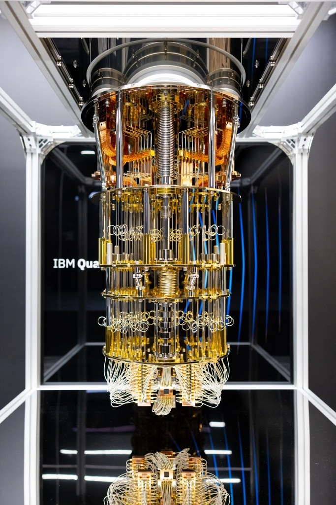
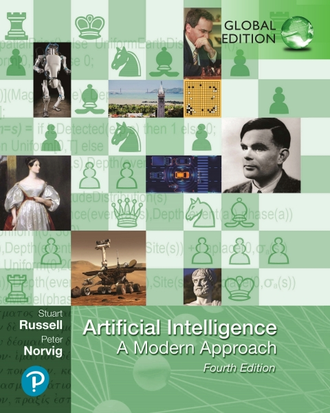

ADA511 0.3
Data Science and AI prototyping


\(\DeclarePairedDelimiter{\set}{\{}{\}}\)
If you can’t join ’em,
beat ’em.
(J. Schwinger)
Dear student
and aspiring data- & AI-engineer
The goal of this course is not to help you learn how to tune the parameters of the latest kind of deep network, or how to choose a good prompt for a Large Language Model, or how to do cross-validation in the fastest way, or what is the latest improvement in random-forest algorithms.
The goal of this course is to help you learn the principles to build the machine-learning algorithms and AI devices of the future. And, as a side effect, you’ll also learn how to concretely improve present-day algorithms, and also how to determine if any of them has already reached its maximal theoretical performance.
How can such a goal be achieved?
There is a small set of rules and one method that are mathematically guaranteed to output the optimal solution of any inference, prediction, classification, and decision-making problem. You can think of this set as defining an “unbeatable, optimal universal machine”. Or, from an AI point of view, you can think of these rules and method as the “laws of robotics” that should govern any ideal AI designed to draw inferences, give answers, and make decisions.
\[ \begin{aligned} &\color[RGB]{68,119,170}\mathrm{P}(\lnot\mathsfit{Y}\nonscript\:\vert\nonscript\:\mathopen{}\mathsfit{X}) = 1 - \mathrm{P}(\mathsfit{Y}\nonscript\:\vert\nonscript\:\mathopen{}\mathsfit{X}) \\[0.5ex] &\color[RGB]{68,119,170}\mathrm{P}(\mathsfit{Z}\land\mathsfit{Y}\nonscript\:\vert\nonscript\:\mathopen{}\mathsfit{X}) = \mathrm{P}(\mathsfit{Z} \nonscript\:\vert\nonscript\:\mathopen{}\mathsfit{Y}\land\mathsfit{X})\cdot \mathrm{P}(\mathsfit{Y}\nonscript\:\vert\nonscript\:\mathopen{} \mathsfit{X}) \\[0.5ex] &\color[RGB]{68,119,170}\mathrm{P}(\mathsfit{Z}\lor\mathsfit{Y}\nonscript\:\vert\nonscript\:\mathopen{}\mathsfit{X}) = \mathrm{P}(\mathsfit{Z} \nonscript\:\vert\nonscript\:\mathopen{}\mathsfit{X}) + \mathrm{P}(\mathsfit{Y} \nonscript\:\vert\nonscript\:\mathopen{}\mathsfit{X}) - \mathrm{P}(\mathsfit{Z}\land\mathsfit{Y}\nonscript\:\vert\nonscript\:\mathopen{}\mathsfit{X}) \\[0.5ex] &\color[RGB]{68,119,170}\mathrm{P}(\mathsfit{X}\nonscript\:\vert\nonscript\:\mathopen{}\mathsfit{X} \land \mathsfit{Z}) = 1 \\[1ex] &\color[RGB]{34,136,51}\texttt{\small choose }\ \operatorname{argmax}\limits_{\mathsfit{D}}\ \sum_{\mathsfit{Y}}\mathrm{U}(\mathsfit{Y} \land \mathsfit{D}\nonscript\:\vert\nonscript\:\mathopen{} \mathsfit{X})\cdot \mathrm{P}(\mathsfit{Y} \nonscript\:\vert\nonscript\:\mathopen{} \mathsfit{D} \land\mathsfit{X}) \end{aligned} \]
These rules and method are quite easy to grasp and understand. You’ll learn them very quickly, and they’ll be the solid ground on which your data & AI engineering knowledge and skills are built.
These rules and method are computationally extremely expensive; the more so, the more data points and data dimensions we need to deal with. Current machine-learning algorithms, from deep networks to large language models, are approximations to this ideal universal method; each one uses a different kind of approximation. The upside of these approximations is that they allow for much faster computations; their downside is that they generally give sub-optimal or non-intelligent results.1
1 Is a suboptimality of, say, just 0.1% important? In a life-or-death situation for 1 000 000 people, 0.1% means 1000 more deaths.
But approximations can be improved with new technologies. The approximations used at any given time in history exploit the computational technologies then available. Deep networks, for instance, would have been a useless approximation 50 years ago, before the introduction of Graphical Processing Units.
Every new technological advance (think of possibly forthcoming quantum computers) opens up possibilities for new approximations that get us closer and closer to the ideal optimum. However, in order to see and realize these possibilities, or to judge whether they have already been realized, a data scientist needs at the very least:
to know the foundation of the maximally optimal method
to think outside the box
Without the first requirement, how do you know what is the target to approximate towards, and how far you are from it? You risk:
making an approximation that leads to worse results than before;
evaluating the approximation in the wrong way, so you don’t even realize it’s worse than before;
trying to improve an approximation that has already attained the theoretical optimum. Think about an engine that has already the maximal efficiency dictated by thermodynamics; and an engineer, ignorant of thermodynamics, who wastes effort in trying to improve it further.
Without the second requirement, you risk missing to take full advantage of the new technological possibilities. Consider the evolution of transportation: if you keep thinking in terms of how to improve a horse-carriage wooden wheels, you’ll never conceive a combustion engine. If you keep thinking in terms of how to improve combustion fuel, you’ll never conceive an electric motor. Existing approximations may of course be good starting points; but you need to clearly understand how they approximate the ideal optimum – so we’re back to the first requirement.
 What new ways of doing data science will quantum computers lead to?
If you want to make advances in machine learning and AI, you must know how the ideal universal algorithm looks like, and you must not limit yourself to thinking of “training sets”, “cross-validation”, “supervised learning”, “overfitting”, “models”, and similar notions. In this course you’ll see for yourself that such notions are anchored to the box of present-day approximations.
And we want to think outside that box.
This course will not only prepare you for the future. With the knowledge and insights acquired, you will be able to devise and implement concrete improvements to present-day methods as well, or calculate whether they can’t be improved further.
Your role in the course
Bugs & features
This course is still in an experimental, “alpha” version. So you will not only learn something from it (hopefully), but also test it together with us, and help improving it for future students. Thank you for this in advance!
For this reason it’s good to clarify some goals and guidelines of this course:
- Undergraduate maths requirements
-
We believe that the fundamental rules and methods can be understood and also used (at least in not too complex applications) without complex mathematics. Indeed the basic laws of inference and decision-making involve only the four basic operations \(+ - \times /\). So this course only requires maths at a beginning first-year undergraduate level.
- Informal style
-
The course notes are written in an informal style; for example they are not developed along “definitions”, “lemmata”, “theorems”. This does not mean that they are inexact. We will warn you about parts that are oversimplified or that only cover special contexts.
- Names don’t constitute knowledge
-
In these course notes you’ll often stumble upon terms in blue bold and definitions in blue Italics. This typographic emphasis does not mean that those terms and definitions should be memorized: rather, it means that there are important ideas around there which you must try to understand and use. In fact we don’t care which terminology you adopt. Instead of the term statistical population, feel free to use the term pink apple if you like, as long you explain the terms you use by means of a discussion and examples.2 What’s important is that you know, can recognize, and can correctly use the ideas behind technical terms.
2 Some standard technical terms are no better. The common term random variable, for instance, often denotes something that is actually not “random” and not variable. Go figure. Using the term green banana would be less misleading!
Memorizing terms, definitions, and where to use them, is how large language models (like chatGPT) operate. If your study is just memorization of terms, you’ll have difficulties finding jobs in the future, because there will be algorithms that can do that better and at a cheaper cost than you.
- Diverse textbooks
-
This course does not have only one textbook: it refers to and merges together parts from several books and articles. As you read these works, you will notice that they adopt quite different terminologies, employ different symbolic notations, give different definitions for similar ideas, and sometimes even contradict each other.
These differences and contradictions are a feature, not a bug!
You might think that this makes studying more difficult; but it actually helps you to really understand an idea and acquire real knowledge, because it forces you to go beyond words, symbols, and specific points of view and examples. This point connects with the previous point, “names don’t constitute knowledge”. The present course notes will help you build comprehension bridges across those books.
The textbook material is presented in Study reading boxes. There are two kinds:
“Read”: you don’t need to study this as for an exam, but you do have to read it, as if it were an interesting piece of news or your favourite blog.
“Skim through”: you don’t need to read every word, you can just skim through the text; but you must get an idea of what it’s speaking about and what its main points are.
You’ll find further details of each item in the final Bibliography.
- Artificial intelligence
-
In order to grasp and use the fundamental laws of inference and decision-making, we shall use notions that are also at the foundations of Artificial Intelligence (and less common in present-day machine learning). So you’ll also get a light introduction to AI for free. Indeed, a textbook that we’ll draw frequently from is Russell & Norvig’s Artificial Intelligence: A Modern Approach (we’ll avoid its part V on machine learning, however, because it’s poorly explained and written).
- Concrete examples
-
Some students find it easier to grasp an idea by starting from an abstract description and then examining concrete examples; some find it easier the other way around. We try to make both happy by alternating between the two approaches. Ideas and notions are always accompanied by examples that we try to keep simple yet realistic, drawing from scenarios ranging from glass forensics to hotel booking.
- Code
-
We shall perform inferences on concrete datasets, also comparing different methodologies. Most of these can be performed with any specific programming language, so you can use your favourite one – remember that we want to try to think outside the box of present-day technologies, and that includes present-day programming languages. Most examples in class and in exercises will be given in
Rand sometimes inPython, but are easily translated into other languages.
- Extra material
-
The course has strong connections with many other disciplines, such as formal logic, proof theory, psychology, philosophy, physics. We have tried to provide a lot of extra reading material in “For the extra curious” side boxes, for those who want to deepen their understanding of topics covered or just connected to the present course. Maybe you’ll stumble into a new passion or even into your life call?

Course structure
The course structure reflects the way in which the ideal universal decision-making machine works. It can be roughly divided into three or four parts, illustrated as follows (this is just a caricature, don’t take this diagram too literally):

Data parts (top-left, yellow box) develop the language in which a problem can be fed into the decision-making machine. Here you will also learn about important pitfalls in handling data.
Inference parts (left-centre, green box) develop the “inference engine” of the machine. Here you will learn ideas at the foundation of AI; and you will also meet probability, but from a point of view that may be quite novel to you – and much more fun.
These two parts will alternate so that their development proceeds almost in parallel.
The utility part (top-right, light-blue box) develops the “decision engine” of the machine. Here you will meet several ideas that will probably be quite new to you – but also very simple and intuitive.
The solution part (bottom, dark-blue box) simply shows how the inference and utility engines combine together to yield the optimal solution to the problem. This part is simple, short, intuitive; it will be a breeze.
We shall start with a quick preview of the solution part in chapters 1–4, because it is very simple to understand, and it shows why the inference and the utility parts are necessary.
Then we shall continue with the inference part in chapters 5–10 and 14–18, alternating it with the data part in chapters 12–13 and 20–23, and with interludes about present-day machine-learning algorithms and their approximations in chapters 4, 11, 19, and 24–26.
As soon as the inference and data parts are complete, you will be able to apply the machine to real, albeit not too complex, inference problems. This application will be made in chapters 32–35.
We finally round up with the utility part in chapters 36–37, extending our concrete application to it in chapter 38. Final connections with present-day machine learning are made in chapters 39–40.
You should be able to see this timeline in the index tab on the side.